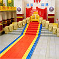

|
|
|
1 Kings 7
|
|
| 7:1
But Solomon was building
his own house thirteen years, and he finished all his house. |
 (7:1-2) "But Solomon was building his own house ... the length thereof was an hundred cubits, and the
breadth thereof fifty cubits, and the height thereof thirty cubits."
(7:1-2) "But Solomon was building his own house ... the length thereof was an hundred cubits, and the
breadth thereof fifty cubits, and the height thereof thirty cubits."
The house that "Solomon built for
the Lord" was tiny compared to the one he built for himself. According to 6:2, God's house had less than one-quarter the floor space
of Solomon's.
Solomon's Palace
|
| 7:2
He built also the house of the forest of Lebanon; the length thereof was an hundred cubits, and the
breadth thereof fifty cubits, and the height thereof thirty cubits, upon
four rows of cedar pillars, with cedar beams upon the pillars.
|
| 7:3
And it was covered with cedar above upon the beams, that lay on forty five
pillars, fifteen in a row.
|
| 7:4
And there were windows in three rows, and light was against light in three
ranks.
|
| 7:5
And all the doors and posts were square, with the windows: and light was
against light in three ranks.
|
| 7:6
And he made a porch of pillars; the length thereof was fifty cubits, and
the breadth thereof thirty cubits: and the porch was before them: and the
other pillars and the thick beam were before them. |
|
| 7:7
Then he made a porch for the throne where he might judge, even the porch
of judgment: and it was covered with cedar from one side of the floor to the
other. |
|
| 7:8
And his house where he dwelt had another court within the porch, which was
of the like work. Solomon made also an house for Pharaoh's daughter, whom he
had taken to wife, like unto this porch. |
|
| 7:9
All these were of costly stones, according to the measures of hewed
stones, sawed with saws, within and without, even from the foundation unto
the coping, and so on the outside toward the great court. |
|
| 7:10
And the foundation was of costly stones, even great stones, stones of ten
cubits, and stones of eight cubits. |
|
| 7:11
And above were costly stones, after the measures of hewed stones, and
cedars. |
|
| 7:12
And the great court round about was with three rows of hewed stones, and a
row of cedar beams, both for the inner court of the house of the LORD, and
for the porch of the house. |
|
| 7:13
And king Solomon sent and fetched Hiram out of Tyre. |
 (7:13-14)
(7:13-14)
"Hiram ... was a widow's son of the tribe of Naphtali."
Which tribe was Hyram from?
|
| 7:14
He was a widow's son of
the tribe of Naphtali, and his father was a man of Tyre, a worker
in brass: and he was filled with wisdom, and understanding, and cunning to
work all works in brass. And he came to king Solomon, and wrought all his
work.
|
| 7:15
For he cast two pillars
of brass, of eighteen cubits high apiece: and a line of twelve
cubits did compass either of them about. |
(7:15)
"For he cast two pillars
of brass, of eighteen cubits high apiece."
How high were
the pillars of brass?
|
| 7:16
And he made two chapiters of molten brass, to set upon the tops of the
pillars: the height of the one chapiter was five cubits, and the height of
the other chapiter was five cubits: |
|
| 7:17
And nets of checker work, and wreaths of chain work, for the chapiters
which were upon the top of the pillars; seven for the one chapiter, and
seven for the other chapiter. |
|
| 7:18
And he made the pillars, and two rows round about upon the one network, to
cover the chapiters that were upon the top, with pomegranates: and so did he
for the other chapiter. |
|
| 7:19
And the chapiters that were upon the top of the pillars were of lily work
in the porch, four cubits. |
|
| 7:20
And the chapiters upon the two pillars had pomegranates also above, over
against the belly which was by the network: and the pomegranates were two
hundred in rows round about upon the other chapiter. |
|
| 7:21
And he set up the pillars in the porch of the temple: and he set up the
right pillar, and called the name thereof Jachin: and he set up the left
pillar, and called the name thereof Boaz. |
|
| 7:22
And upon the top of the pillars was lily work: so was the work of the
pillars finished. |
|
| 7:23
And he made a molten
sea, ten cubits from the one brim to the other: it was round all about, and
his height was five cubits: and a line of thirty cubits did compass it round
about. |
 (7:23)
"He made a molten sea, ten cubits from the one brim to the other: it was round all about, and his height was five cubits:
and a line of thirty cubits did compass it round about." (7:23)
"He made a molten sea, ten cubits from the one brim to the other: it was round all about, and his height was five cubits:
and a line of thirty cubits did compass it round about."
This verse implies that the value of
pi is 3. (The actual value is approximately 3.14159.)
Good Math, Bad Math:
Innumerate Fundamentalists and π
|
| 7:24
And under the brim of it round about there were knops compassing it, ten
in a cubit, compassing the sea round about: the knops were cast in two rows,
when it was cast.
|
| 7:25
It stood upon twelve oxen, three looking toward the north, and three
looking toward the west, and three looking toward the south, and three
looking toward the east: and the sea was set above upon them, and all their
hinder parts were inward. |
|
| 7:26
And it was an hand breadth thick, and the brim thereof was wrought like
the brim of a cup, with flowers of lilies: it contained two thousand
baths. |
(7:26) "It contained two thousand baths."
What was the
volume of the molten sea in Solomon's temple?
|
| 7:27
And he made ten bases of brass; four cubits was the length of one base,
and four cubits the breadth thereof, and three cubits the height of it. |
|
| 7:28
And the work of the bases was on this manner: they had borders, and the
borders were between the ledges: |
|
| 7:29
And on the borders that were between the ledges were lions, oxen, and
cherubims: and upon the ledges there was a base above: and beneath the lions
and oxen were certain additions made of thin work. |
|
| 7:30
And every base had four brasen wheels, and plates of brass: and the four
corners thereof had undersetters: under the laver were undersetters molten,
at the side of every addition. |
|
| 7:31
And the mouth of it within the chapiter and above was a cubit: but the
mouth thereof was round after the work of the base, a cubit and an half: and
also upon the mouth of it were gravings with their borders, foursquare, not
round. |
|
| 7:32
And under the borders were four wheels; and the axletrees of the wheels
were joined to the base: and the height of a wheel was a cubit and half a
cubit. |
|
| 7:33
And the work of the wheels was like the work of a chariot wheel: their
axletrees, and their naves, and their felloes, and their spokes, were all
molten. |
|
| 7:34
And there were four undersetters to the four corners of one base: and the
undersetters were of the very base itself. |
|
| 7:35
And in the top of the base was there a round compass of half a cubit high:
and on the top of the base the ledges thereof and the borders thereof were
of the same. |
|
| 7:36
For on the plates of the ledges thereof, and on the borders thereof, he
graved cherubims, lions, and palm trees, according to the proportion of
every one, and additions round about. |
|
| 7:37
After this manner he made the ten bases: all of them had one casting, one
measure, and one size. |
|
| 7:38
Then made he ten lavers of brass: one laver contained forty baths: and
every laver was four cubits: and upon every one of the ten bases one laver. |
|
| 7:39
And he put five bases on the right side of the house, and five on the left
side of the house: and he set the sea on the right side of the house
eastward over against the south. |
|
| 7:40
And Hiram made the lavers, and the shovels, and the basons. So Hiram made
an end of doing all the work that he made king Solomon for the house of the
LORD: |
|
| 7:41
The two pillars, and the two bowls of the chapiters that were on the top
of the two pillars; and the two networks, to cover the two bowls of the
chapiters which were upon the top of the pillars; |
|
| 7:42
And four hundred pomegranates for the two networks, even two rows of
pomegranates for one network, to cover the two bowls of the chapiters that
were upon the pillars; |
|
| 7:43
And the ten bases, and ten lavers on the bases; |
|
| 7:44
And one sea, and twelve oxen under the sea; |
|
| 7:45
And the pots, and the shovels, and the basons: and all these vessels,
which Hiram made to king Solomon for the house of the LORD, were of bright
brass. |
|
| 7:46
In the plain of Jordan did the king cast them, in the clay ground between
Succoth and Zarthan. |
|
| 7:47
And Solomon left all the vessels unweighed, because they were exceeding
many: neither was the weight of the brass found out. |
|
| 7:48
And Solomon made all the vessels that pertained unto the house of the
LORD: the altar of gold, and the table of gold, whereupon the shewbread was, |
|
| 7:49
And the candlesticks of pure gold, five on the right side, and five on the
left, before the oracle, with the flowers, and the lamps, and the tongs of
gold, |
|
| 7:50
And the bowls, and the snuffers, and the basons, and the spoons, and the
censers of pure gold; and the hinges of gold, both for the doors of the
inner house, the most holy place, and for the doors of the house, to wit, of
the temple. |
|
| 7:51
So was ended all the work that king Solomon made for the house of the
LORD. And Solomon brought in the things which David his father had
dedicated; even the silver, and the gold, and the vessels, did he put among
the treasures of the house of the LORD.
|
|
|